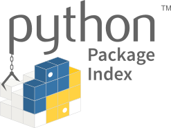

Codes

Education
PhD (2011-2016)
Mechanics (Advanced Materials and Mechanics)
Center for Applied Physics and Technology, Peking University
College of Engineering, Peking University
Supervised by Professor Qian Wang
Bachelor (2007-2011)
Engineering Structure Analysis
College of Engineering, Peking University
Employments
Professor (2026 - )
School of Physics and Information Technology
Shaanxi Normal University
Research Professor (2019 - 2025)
ICQD, HFNL
University of Science and Technology of China
Postdoctoral Fellow (2016 - 2018)
Institute for Advanced Study, Tsinghua University
Supervisor: Professor Zheng Liu (Tsinghua)
Co-supervisor: Professor Feng Liu (University of Utah)
Grants
Awards
Academic service
Referee for NSFC proposals